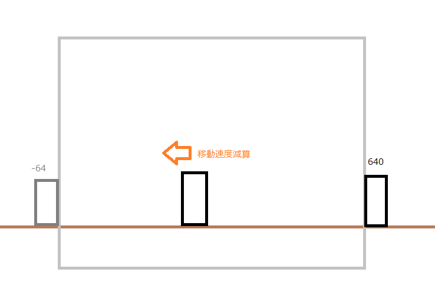

前回のC言語初めてのゲーム(走る抜けジャンプ)-part3を終えている人が対象となっています。終えてない人は以下のリンクから飛んでやってください。
C言語初めてのゲーム(走り抜けジャンプ)-part3
今回は前回の続きからゲームの本編を作り、ゲームの完成を目指します。
本編の前に謝罪申し上げます。
えー、私なんですが、このページを書き始めていたころはとてもとてもやる気に満ち満ちていました。
ですが、ゲームを作る説明をしているということはゲームを作る人でもありました。
すみません、忙しくて数か月時間を空けていざやろうと思いましたが、
あら、やだ・・・HTMLつっら
と、いうことなので。打ち切り！は悲しいので考え方とアルゴリズムと言えるのか怪しいアルゴリズムだけを残して終わろうと思います。
やる気が出るかあるいは後任の人に委ねます。
今回はキャラクターの動作を作ります。キャラクターはジャンプのみです。なのでジャンプを作ります。
制限させたジャンプとありますが考え方では特に意味はありません。このゲームを簡単に作るうえではそうしようとしていただけです。
ジャンプの考え方は基本的に今の自分と同じようなものです。ただ常に重量を受けているのではなく必要なときのみ受けるようにしています。
また、重力の大きさも9.8ではなく場合によっては小さくしたり大きくしたりします。ふわっとしたゲームなら小さいですしジャンプ力のないゲームなら大きくするのもありです。
考え方ですが、必要な要素から言うと、重力とジャンプ力と飛んだ瞬間のジャンプ力です。
キャラクターがジャンプのコマンドを押したら飛んだ瞬間のジャンプ力をキャラクターに作用させます。
それとほぼ同時にジャンプ力の数値を。また、重力を加算減算させていきます。
重力よりジャンプ力が勝ってしまうとぶっ飛びますので基本的にはジャンプ力のほうが小さいです。
その二つが同時に行われることで 飛んだ瞬間のジャンプ力＋ジャンプ力==重力 となり重力が勝り下に降りていきます。
あとプログラムで書く上では飛んだ瞬間のジャンプ力など不要です。ジャンプ力に一括させれば楽です。
もっと細かく言うと長くなるのでおおよそといったところで終わります。
例えばこんな感じです。
動画が貼り付けてなければファイルから直接見てください。
今回は敵の動作を作ります。敵はキャラクターに突っ込んでくる動きのみなのでそれを作ります。
このゲームの敵の移動は全然難しくないです。移動してくるだけなので。
例えば画面を横640縦480の環境で作っており、敵の画像サイズが横64縦100とするなら、敵の動き始めのX座標は 640となり、動き終わりは -64になります。。
あとはそれっぽい移動速度でX座標を減算していくだけです。以上です。はい
ループさせたければ-64になった瞬間640に戻して行えばいいし、少し時間を置きたければ-64になった瞬間 int waitcount; 的なものを入れればいいと思います。
増やしたければ構造体配列にすれば処理が楽でかつ簡単に増やせると思います。

前回で敵の動きを作りましたがゲームとしては成り立ちません。なのでキャラクターとの当たり判定を作ります。
当たり判定は深く掘り下げると大変なことになるので一番簡単なやり方で行います。
敵と自分に対して４面で行います。
以上です。
一番簡単な説明のつもりが長くなってしまって収集つかなかったので端折ります。当たり判定は自分でどうにかなるよね。
前回までで一応ゲームとして遊べますが一味欲しいところです。なので背景をスクロールさせて全体的に動きを演出します。
今回は一番楽な方法です。
二枚の絵を交互に行うやり方です。
あと違うかもしれませんが、一枚の絵を二つの変数にロードしないといけないかもしれません。もしかしたらクリッピングが悪さするかもしれません。
言葉じゃわかりにくいので図で示そうと思ったのですがそれも難しかったので言葉にします。
例えば画面サイズが横640だとします。
二枚の絵のうち一枚のY座標の初期化を 0にします。もう一枚は 640にします。
それで移動速度とともにY座標を両方とも減算します。
そうしたら一枚の絵の数値が -640に近づくと思います。そうしたらその絵の数値を640に変えてください。
二枚目の絵も同様になると思うので同じような処理を続け繰り返してください。
これはキャラクターが右に動いてる動作ですが逆なら逆にすれば問題ないです。背景がつながらないのは絵次第です。
これで今回は終わります。
まとめを書こうと思いましたがいまいち思いつきませんでした。
説明が拙い部分が多くあったかもしれませんがなんとか理解していただければ幸いです。
簡単なゲームを作ってきました。正直、ゲームを作るうえでの重要なことなどを重視して作ったので無駄な処理などがあるかもしれませんがご了承ください。恐らく私のページをもとにほかの人が修正してくださっていると思います。
というのが以前の私の記述でしたが、どうでしたでしょうか。端折りすぎましたし、もはや言葉だけで終えていました。すみません。ありがとうございました。
Copyright (C) 2002-2009 Xiph.org Foundation
Redistribution and use in source and binary forms, with or without
modification, are permitted provided that the following conditions
are met:
- Redistributions of source code must retain the above copyright
notice, this list of conditions and the following disclaimer.
- Redistributions in binary form must reproduce the above copyright
notice, this list of conditions and the following disclaimer in the
documentation and/or other materials provided with the distribution.
- Neither the name of the Xiph.org Foundation nor the names of its
contributors may be used to endorse or promote products derived from
this software without specific prior written permission.
THIS SOFTWARE IS PROVIDED BY THE COPYRIGHT HOLDERS AND CONTRIBUTORS
``AS IS'' AND ANY EXPRESS OR IMPLIED WARRANTIES, INCLUDING, BUT NOT
LIMITED TO, THE IMPLIED WARRANTIES OF MERCHANTABILITY AND FITNESS FOR
A PARTICULAR PURPOSE ARE DISCLAIMED. IN NO EVENT SHALL THE FOUNDATION
OR CONTRIBUTORS BE LIABLE FOR ANY DIRECT, INDIRECT, INCIDENTAL,
SPECIAL, EXEMPLARY, OR CONSEQUENTIAL DAMAGES (INCLUDING, BUT NOT
LIMITED TO, PROCUREMENT OF SUBSTITUTE GOODS OR SERVICES; LOSS OF USE,
DATA, OR PROFITS; OR BUSINESS INTERRUPTION) HOWEVER CAUSED AND ON ANY
THEORY OF LIABILITY, WHETHER IN CONTRACT, STRICT LIABILITY, OR TORT
(INCLUDING NEGLIGENCE OR OTHERWISE) ARISING IN ANY WAY OUT OF THE USE
OF THIS SOFTWARE, EVEN IF ADVISED OF THE POSSIBILITY OF SUCH DAMAGE.
libpng Copyright (C) 2004, 2006-2012 Glenn Randers-Pehrson.
zlib Copyright (C) 1995-2012 Jean-loup Gailly and Mark Adler.
DX Library Copyright (C) 2001-2014 Takumi Yamada.